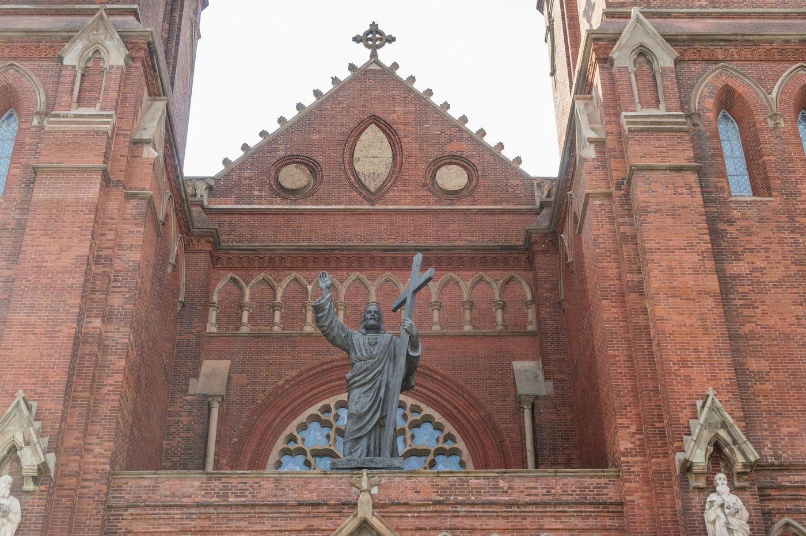
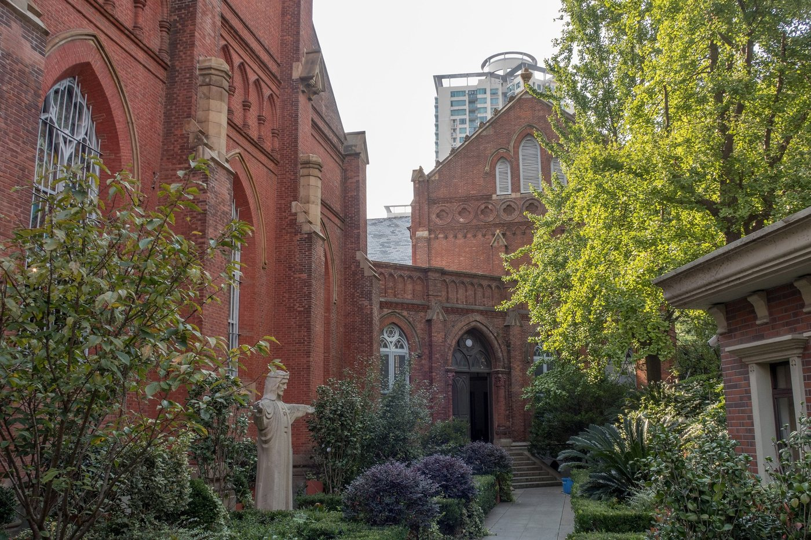
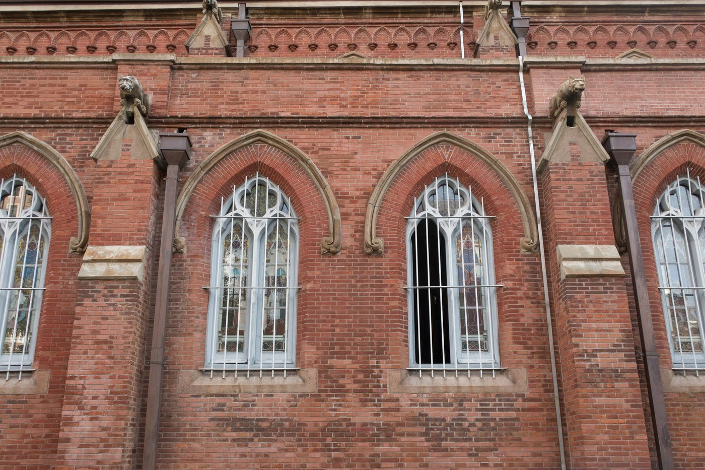

Xujiahui: St Ignatius Cathedral, Tushanwan Museum and the Xu Guangqi sites 徐家汇（徐家汇圣依纳爵主教座堂·土山湾博物馆·徐光启纪念馆）
Jesuit-era heritage cluster · Xuhui
LikelyMuseum partly closed · 18 Nov 2026


The 1910 cathedral and Xu Guangqi hall are free; Tushanwan Museum shut most halls in April 2026, no reopening notice.
Museum partly closed
The evidence for this one has a gap. Check on the day or call ahead.
Why it matters
Xujiahui is where Jesuit-led Western learning took root in Shanghai: from 1847 a library (Wikipedia: the city's first modern one), a school, the Tushanwan orphanage workshops and an observatory (1873). Xu Guangqi (1562-1633), baptised in 1603, worked with Matteo Ricci on part of Euclid and led the 1629 calendar reform. The cathedral dates from 1906-1910.
What to see
St Ignatius Cathedral: red-brick Gothic, twin 57 m towers, consecrated 1910, restored by Dec 2017. Tushanwan Museum (open since June 2010): carving, painting, stained glass, an orphan-built pailou gate. Xu Guangqi's memorial hall is in Guangqi Park.
How to get there
Metro Line 1 to Xujiahui. Taxi: show 上海蒲西路158号 for the cathedral. Do not walk in during Mass. Ask your hotel to check Tushanwan's hours first.
Local tip
Check Tushanwan Museum's status first (see Hours); if it is still shut except the Pailou Hall, do the cathedral and the Xu Guangqi hall. The 12:00 Sunday Mass is the one service the diocese lists in English.
Watch out
Check Tushanwan Museum's status before going (see Hours). On Sundays non-Catholics may be turned away (unverified traveller note). Tushanwan has been open since June 2010 (Wen Wei Po); English Wikipedia's 2020 date conflicts with that.
What was checked, and what was not
Read on 18 Nov 2026
Shanghai government pages (Nov 2025) list the sites as free and give Tushanwan's hours. The diocese page (read 15 Nov 2026) confirms cathedral dates and Mass times. Wen Wei Po (2015) shows the museum open since 2010. The Xuhui District notice of 3 Apr 2026 on the Tushanwan closure (The Paper, 4 Apr) and the city tourism portal's hours pages were read 18 Nov 2026.
Not checked
Whether Tushanwan Museum has reopened since its April 2026 maintenance closure; the cathedral and Xu Guangqi hall hours come from a page dated 17 Apr 2025; whether Tushanwan needs ID or booking. Chinese addresses other than the cathedral's are composed from English text.